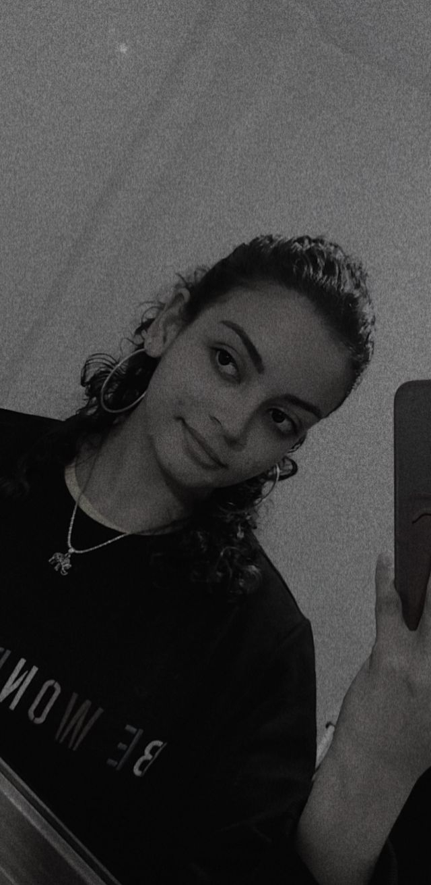

Fernanda Venâncio Travassos
Muito prazer! Sou Fernanda Travassos, natural de João Pessoa (PB) e residente em Campina Grande (PB) há quatro anos. Sou graduada em Sistemas de Informação pela Unifacisa.
Possuo proficiência avançada em Inglês e Japonês e atualmente exerço a função de Desenvolvedora Web, Web Designer e Engenheira de IA, atuando com diversas tecnologias e frameworks, como HTML, CSS, JavaScript, TypeScript, Bootstrap, React, Angular, Python (com foco em back-end) e princípios de UX/UI Design.
Minha trajetória profissional inclui experiência em gestão de projetos, coordenação e elaboração de atividades em feiras de ciências por sete anos, além de atuação anterior como professora de inglês. Tenho como foco o desenvolvimento de soluções digitais eficientes, inovadoras e alinhadas às necessidades do usuário e do negócio.
Busco constantemente aprimorar minhas habilidades técnicas e interpessoais, com o objetivo de contribuir para o crescimento de equipes e empresas, entregando resultados de alta qualidade e promovendo experiências digitais que gerem valor e impacto positivo.